Centos6.8安装图解详细教程
操作系统：CentOS 6.8 64位
IP地址：192.168.21.129
网关：192.168.21.2
DNS：8.8.8.8 8.8.4.4
备注：
CentOS 6.8系统镜像有32位和64位两个版本，并且还有专门针对服务器优化过的minimal版本
生产服务器如果是大内存（4G以上内存），建议安装CentOS-6.8-x86_64-minimal.iso版本
附：CentOS 6.8下载地址
32位minimal版本：
http://mirrors.aliyun.com/centos/6.8/isos/i386/CentOS-6.8-i386-minimal.iso
64位minimal.版本：
http://mirrors.aliyun.com/centos/6.8/isos/x86_64/CentOS-6.8-x86_64-minimal.iso
1、安装CentOS 6.8系统的计算机内存必须等于或者大于628M（最小内存628M），才能启用图形安装模式；
2、CentOS 6.8的系统安装方式分为：图形安装模式和文本安装模式；
3、CentOS 6.8文本安装模式不支持自定义分区，建议使用图形安装模式安装；
5、CentOS 6.8系统运行方式分为：带图形界面、可以用鼠标操作的图形化方式和不带图形界面、直接用命令行操作的文本方式（CentOS minimal版本默认是以文本方式运行，在系统安装的过程中没有系统运行方式的自定义选项）；
一、安装CentOS 6.8
用光盘成功引导系统，会出现下面的界面
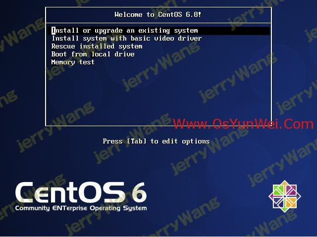## 界面说明：
Install or upgrade an existing system #安装或升级现有的系统
install system with basic video driver #安装过程中采用基本的显卡驱动
Rescue installed system #进入系统修复模式
Boot from local drive #退出安装从硬盘启动
Memory test #内存检测
这里选择第一项，安装或升级现有的系统，回车。
出现是否对CD媒体进行测试的提问，这里选择“Skip”跳过测试。
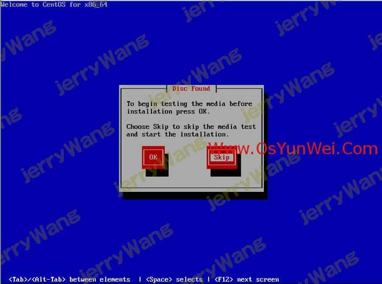出现下面的界面
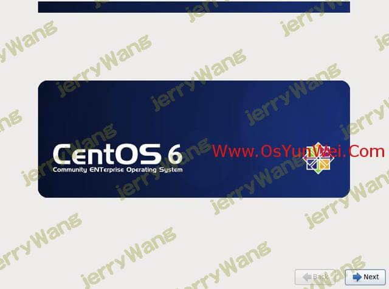系统运维 www.osyunwei.com 温馨提醒：qihang01原创内容©版权所有,转载请注明出处及原文链接
Next
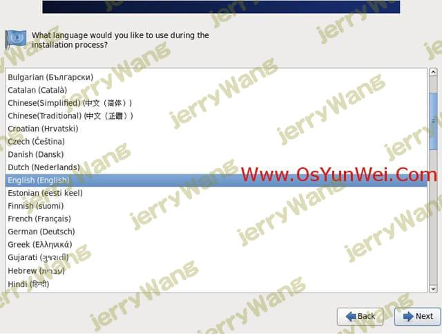选择语言为：English（English） #生产服务器建议安装英文版本
Next
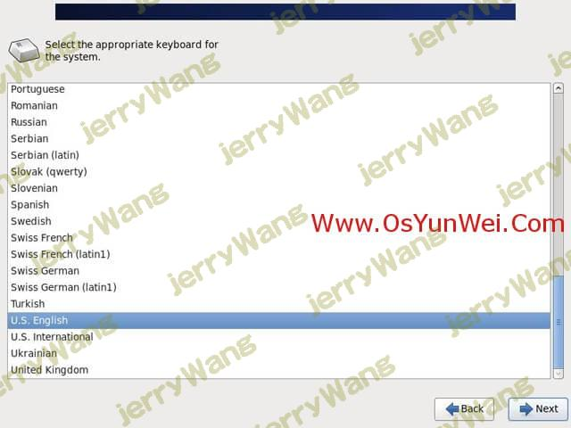键盘选择为：U.S.English
Next
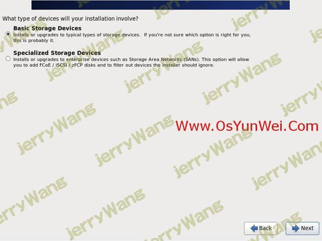选择第一项，基本存储设备
Next
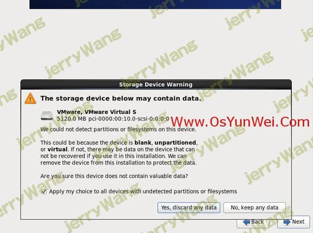选择第一项：Yes，忽略所有数据
Next
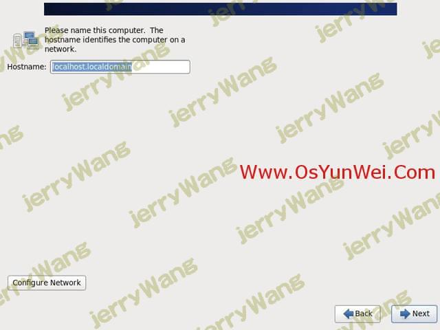系统运维 www.osyunwei.com 温馨提醒：qihang01原创内容©版权所有,转载请注明出处及原文链接
设置主机名，这里默认即可，安装完成之后再修改
Next
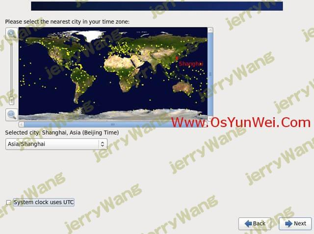时区选择：Asia/Shanghai
“System clock user UTC” #取消前面打勾，不使用UTC时间
设置root密码
Next
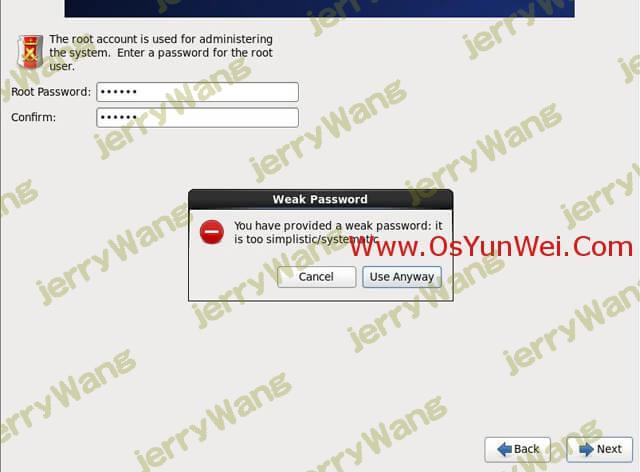注意：如果你使用的密码过于简单，系统会自动提示：您的密码不够安全，过于简单化/系统化
这里选择“Use Anyway” 无论如何都使用
生产环境必须设置强壮复杂的密码
Next
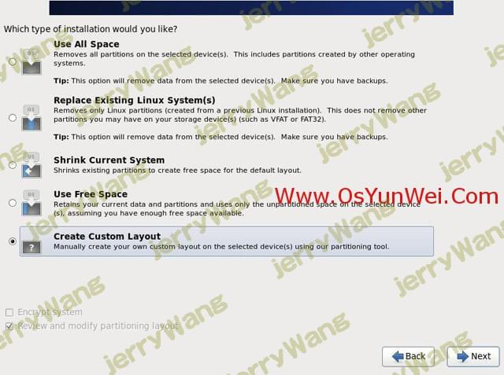选择最后一项，Create Custom Layout 创建自定义分区
Next
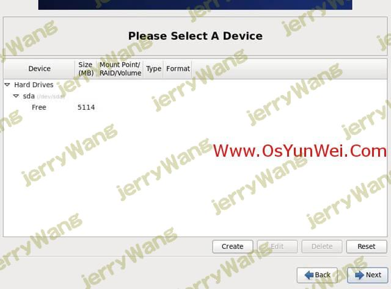可以看到硬盘的容量，我这里显示的是5G，现在自定义分区。
注意：分区之前，自己先要规划好，怎么分区
我这里的分区如下：
硬盘总共5G
swap #1024M，一般设置为内存2倍
/ #剩余所有空间
特别说明：
用于正式生产的服务器，切记必须把数据盘单独分区，防止系统出问题时，保证数据的完整性。比如可以再划分一个
/data专门用来存放数据。
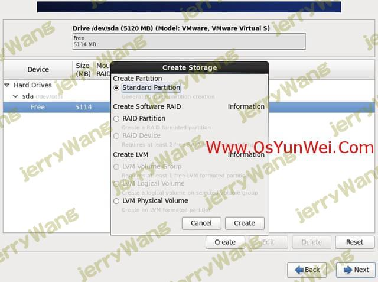选中空闲分区Free，点创建Create
选择标准分区Standard Partition，点创建Create
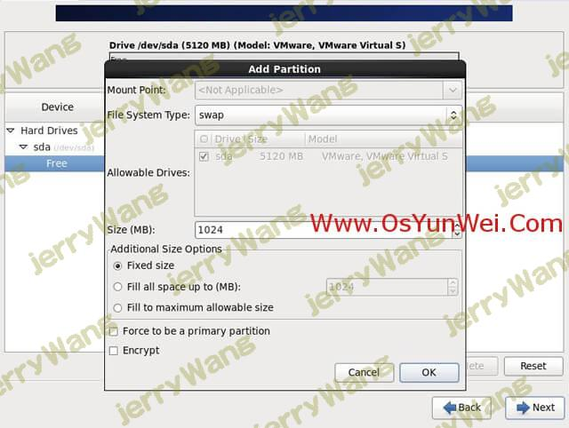文件系统类型：swap
大小Size：1024
其他选项默认即可
确定 OK
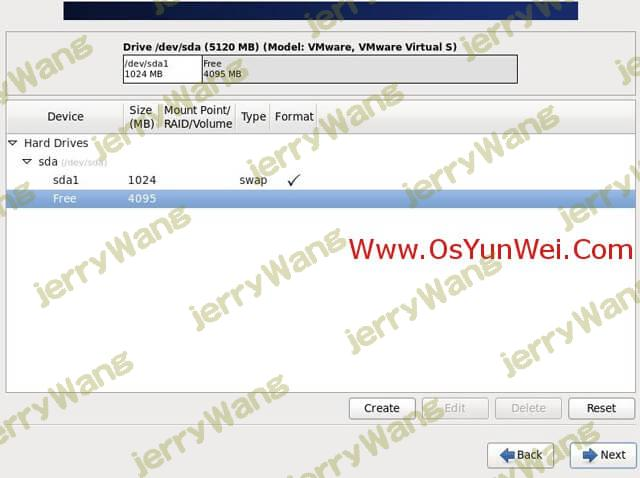继续选中空闲分区Free，点创建Create
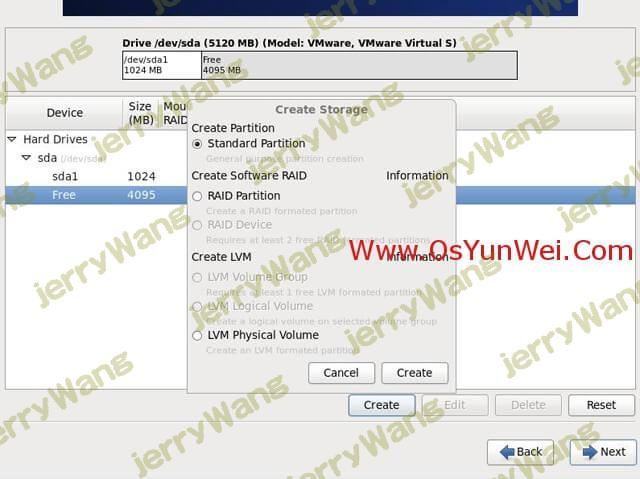选择标准分区Standard Partition，点创建Create
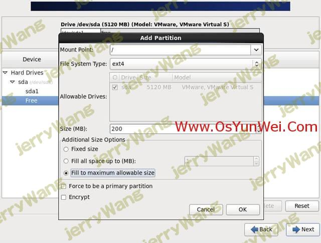挂载点：/
文件系统类型：ext4
选中“使用全部可用空间”
其他选项默认即可
确定 OK
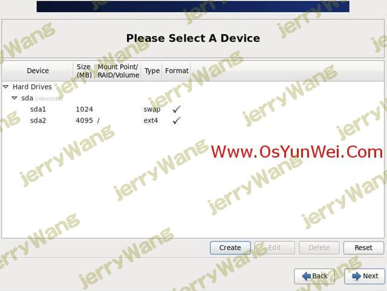创建好分区之后，如上图所示，然后点Next
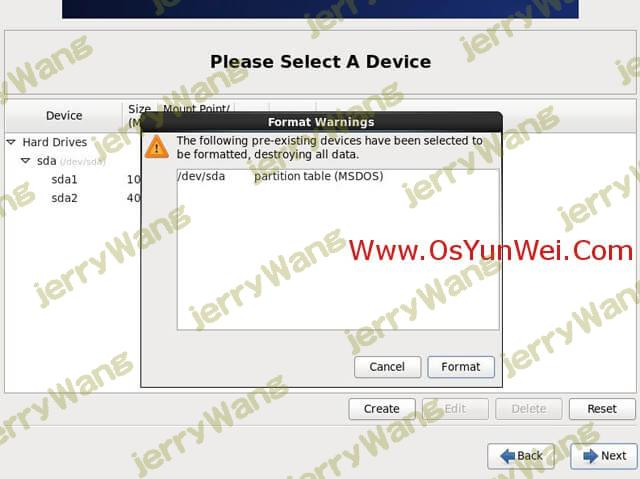点“Format”格式化
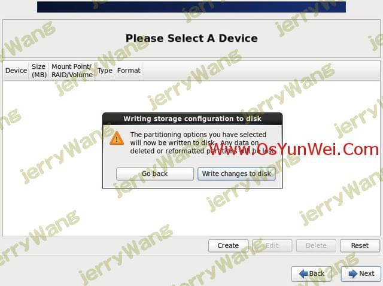选择“Write changes to disk”将修改写入磁盘
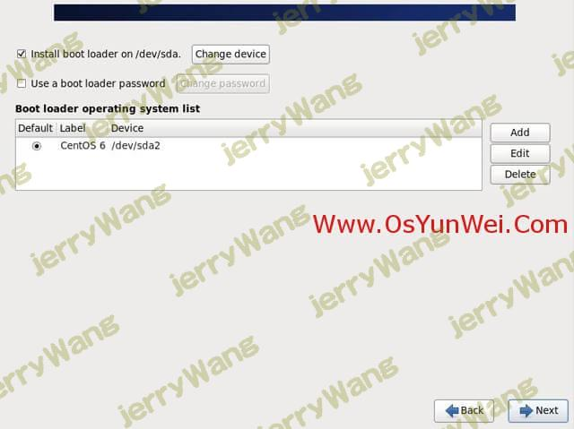默认
Next
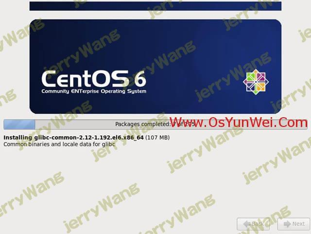开始安装
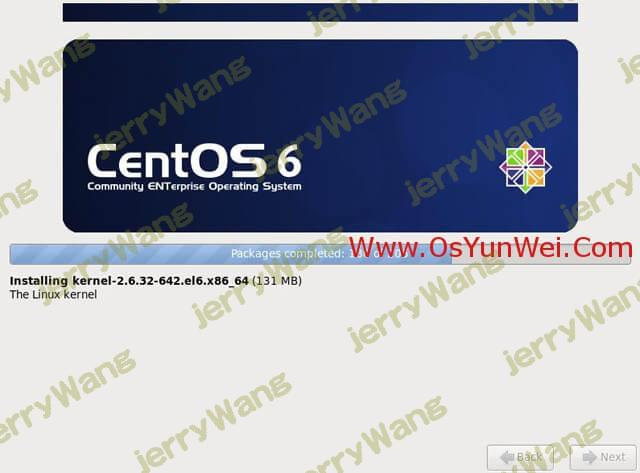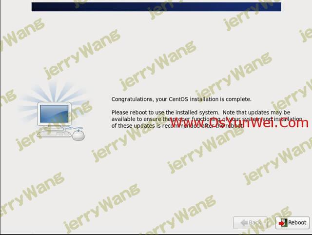安装完成
点“Reboot”重新引导，系统自动重启
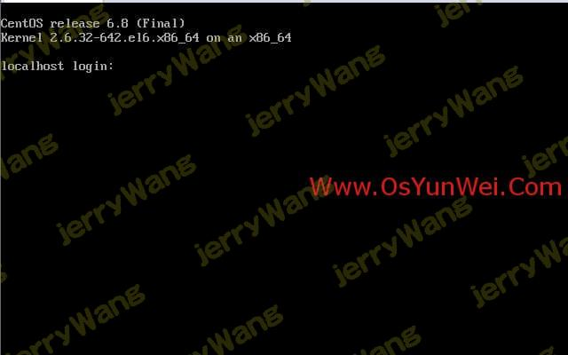系统安装完成
二、设置IP地址、网关、DNS
说明：CentOS 6.8默认安装好之后是没有自动开启网络连接的！
输入账号root
再输入安装过程中设置的密码，登录到系统
vi /etc/sysconfig/network-scripts/ifcfg-eth0 #编辑配置文件,添加修改以下内容
BOOTPROTO=static #启用静态IP地址
ONBOOT=yes #开启自动启用网络连接
IPADDR=192.168.21.129 #设置IP地址
NETMASK=255.255.255.0 #设置子网掩码
GATEWAY=192.168.21.2 #设置网关
DNS1=8.8.8.8 #设置主DNS
DNS2=8.8.4.4 #设置备DNS
IPV6INIT=no #禁止IPV6
:wq! #保存退出
service ip6tables stop #停止IPV6服务
chkconfig ip6tables off #禁止IPV6开机启动
service yum-updatesd stop #关闭系统自动更新
chkconfig yum-updatesd off #禁止开启启动
service network restart #重启网络连接
ifconfig #查看IP地址
三、设置主机名
约定：
主机名命名规范：业务.机房.主备.域名
这里设置主机名为：bbs.hz.m.osyunwei.com
1、hostname “bbs.hz.m.osyunwei.com”
设置主机名为bbs.hz.m.osyunwei.com
2、vi /etc/sysconfig/network #编辑配置文件
HOSTNAME= bbs.hz.m.osyunwei.com
修改localhost.localdomain为bbs.hz.m.osyunwei.com
:wq! #保存退出
3、vi /etc/hosts #编辑配置文件
127.0.0.1 bbs.hz.m.osyunwei.com localhost
修改localhost.localdomain为bbs.hz.m.osyunwei.com
:wq! #保存退出
shutdown -r now #重启系统
 微信
微信 支付宝
支付宝